- motorfietsen;
- personenauto's;
- auto's voor dubbel gebruik;
- minibussen.

- lichte vrachtauto's;
- vrachtauto's.

- autocars.

- motorfietsen.


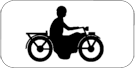

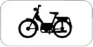


| TypeBord | vast/var opschrift | opschrift | Icoon | Benaming | Betekenis | Plaatsing | Combinatie |
| Gevaarsbord | vast | |
A1a | Gevaarlijke bocht naar links. | |||
| Gevaarsbord | vast | |
A1b | Gevaarlijke bocht naar rechts. | |||
| Gevaarsbord | vast | |
A1c | Gevaarlijke bocht. Dubbele bocht of opeenvolging van meer dan twee bochten, de eerste naar links. | |||
| Gevaarsbord | vast | |
A1d | Gevaarlijke bocht. Dubbele bocht of opeenvolging van meer dan twee bochten, de eerste naar rechts. | |||
| Gevaarsbord | var | 10% | |
A3 | Gevaarlijke daling. | ||
| Gevaarsbord | var | 10% | |
A5 | Steile helling. | ||
| Gevaarsbord | vast | |
A7a | Rijbaanversmalling. | |||
| Gevaarsbord | vast | |
A7b | Rijbaanversmalling langs links. | |||
| Gevaarsbord | vast | |
A7c | Rijbaanversmalling langs rechts. | |||
| Gevaarsbord | vast | |
A9 | Beweegbare brug. | |||
| Gevaarsbord | vast | |
A11 | Uitweg op een kaai of een oever. | |||
| Gevaarsbord | vast | |
A13 | Uitholling overdwars of ezelsrug. | |||
| Gevaarsbord | vast | |
A14 | Verhoogde inrichting. | Gevaarsbord dat een verhoogde inrichting aankondigt. | F87 | |
| Gevaarsbord | vast | |
A15 | Glibberige rijbaan. | |||
| Gevaarsbord | vast | |
A17 | Kiezelprojectie. | |||
| Gevaarsbord | vast | |
A19 | Vallende stenen. | |||
| Gevaarsbord | vast | |
A21 | Oversteekplaats voor voetgangers. | |||
| Gevaarsbord | vast | |
A23 | Plaats waar speciaal veel kinderen komen. | |||
| Gevaarsbord | vast | |
A25 | Oversteekplaats voor fietsers. | Moeten gesignaleerd worden (1) de plaatsen buiten de kruispunten, waar de fietsers en de bestuurders van tweewielige bromfietsen verplicht zijn het fietspad te verlaten om de rijbaan op te rijden; (2) de oversteekplaatsen voor fietsers en bestuurders van tweewielige bromfietsen gelegen buiten de bebouwde kom en die niet bestemd zijn voor het oversteken van een kruispunt. | F50 | |
| Gevaarsbord | vast | |
A27 | Doortocht van groot wild. | |||
| Gevaarsbord | vast | |
A29 | Doortocht van vee. | |||
| Gevaarsbord | vast | |
A31 | Werken. | |||
| Gevaarsbord | vast | |
A41 | Overweg met slagbomen. | |||
| Gevaarsbord | vast | |
A43 | Overweg zonder slagbomen. | |||
| Gevaarsbord | vast | |
A45 | Overweg voor enkel spoor. | |||
| Gevaarsbord | vast | |
A47 | Overweg voor twee of meer sporen. | |||
| Gevaarsbord | vast | |
A49 | Kruising van een openbare weg door een of meer in de rijbaan aangelegde sporen. | |||
| Gevaarsbord | vast | |
A51 | Gevaar dat niet door een speciaal symbool wordt bepaald. Een onderbord duidt de aard van het gevaar aan. | Dit verkeersbord wordt slechts geplaatst wanneer geen ander gevaarsbord kan gebruikt worden. | ||
| Gevaarsbord | vast | |
A39 | Verkeer toegelaten in twee richtingen na een gedeelte van de rijbaan met eenrichtingsverkeer. | Ook: Moet gesignaleerd worden elk rijbaanvak dat normaal bestemd is voor éénrichtingsverkeer wanneer die rijbaan er tijdelijk opengesteld is voor het verkeer in de twee richtingen; een onderbord van het type II van bijlage 2 tot dit besluit duidt de lengte van het vak aan. | ||
| Gevaarsbord | vast | |
A37 | Zijwind. | |||
| Voorrangsbord | vast | |
B1 | Voorrang verlenen. De bestuurder moet voorrang verlenen aan iedere bestuurder die rijdt op de openbare weg of de rijbaan die hij oprijdt. Zonodig stoppen. | B15|B9 | ||
| Voorrangsbord | var | 150m | 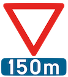 | B3 | Verkeersbord dat het verkeersbord B1 aankondigt op de bij benadering aangeduide afstand. | ||
| Voorrangsbord | var | 150m | |
B3_150m | Verkeersbord dat het verkeersbord B1 aankondigt op de bij benadering aangeduide afstand. | ||
| Voorrangsbord | var | 200m | |
B3_200m | Verkeersbord dat het verkeersbord B1 aankondigt op de bij benadering aangeduide afstand. | ||
| Voorrangsbord | vast | |
B5 | Stoppen en voorrang verlenen. | |||
| Voorrangsbord | var | 150m | |
B7 | Verkeersbord dat het verkeersbord B5 aankondigt op de bij benadering aangeduide afstand. | B15|B9 | |
| Voorrangsbord | vast | |
B9 | Voorrangsweg. | B1|B5 | ||
| Voorrangsbord | vast | |
B11 | Einde van voorrangsweg. | |||
| Voorrangsbord | vast | |
B15 | Voorrang op het eerstvolgende kruispunt. | |||
| Voorrangsbord | vast | 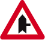 | B15 | Voorrang. De horizontale streep van het symbool mag worden gewijzigd om duidelijker plaatsgesteldheid weer te geven. | B1|B5 | ||
| Voorrangsbord | vast | 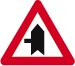 | B15 | Voorrang. De horizontale streep van het symbool mag worden gewijzigd om duidelijker plaatsgesteldheid weer te geven. | B1|B5 | ||
| Voorrangsbord | vast | 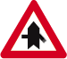 | B15 | Voorrang. De horizontale streep van het symbool mag worden gewijzigd om duidelijker plaatsgesteldheid weer te geven. | B1|B5 | ||
| Voorrangsbord | vast | |
B19 | Smalle doorgang. Gebod doorgang te verlenen aan de bestuurders die uit de tegenovergestelde richting komen | B21 | ||
| Voorrangsbord | vast | |
B21 | Smalle doorgang. Voorrang ten opzichte van de bestuurders die uit de tegenovergestelde richting komen. | B19 | ||
| Voorrangsbord | vast | |
B17 | Voorrang van rechts. | |||
| Voorrangsbord | vast | |
B23 | Fietsers mogen rechtdoor rijden, wanneer het verkeerslicht op rood of oranjegeel staat, op voorwaarde dat zij hierbij voorrang verlenen aan de andere weggebruikers die zich verplaatsen op de openbare weg of op de rijbaan vanaf het rode of oranjegele licht. | |||
| Voorrangsbord | vast | |
B22 | Fietsers mogen rechtsaf slaan, wanneer het verkeerslicht op rood of oranjegeel staat, op voorwaarde dat zij hierbij voorrang verlenen aan de andere weggebruikers die zich verplaatsen op de openbare weg of op de rijbaan. | |||
| Onderbord | vast | |
M1 | Onderbord mag de verkeersborden B1 en B5 aanvullen wanneer die verkeersborden alleen betrekking hebben op de fietsers. | |||
| Onderbord | vast | |
M2 | Een onderbord van het model M.2. moet het verkeersbord C1 en F19 aanvullen wanneer het verbod niet geldt voor de fietsers. | |||
| Onderbord | vast | |
M3 | Een onderbord van het model M.3. moet het verkeersbord C1 en F19 aanvullen wanneer het verbod niet geldt voor de fietsers en niet voor de bestuurders van tweewielige bromfietsen klasse A. | |||
| Onderbord | vast | |
M4 | Een onderbord van het model M.4. moet het verkeersbord C1 en F19 aanvullen wanneer het verbod niet geldt voor de fietsers. | |||
| Onderbord | vast | M3 | Een onderbord van het model M.5. moet het verkeersbord C1 en F19 aanvullen wanneer het verbod niet geldt voor de fietsers en niet voor de bestuurders van tweewielige bromfietsen klasse A. | ||||
| Onderbord | vast | |
M6 | Een onderbord van het model M.6. bedoeld in artikel 65.2. moet het verkeersbord D7 aanvullen wanneer het fietspad moet gevolgd worden door de bestuurders van tweewielige bromfietsen klasse B. | |||
| Onderbord | vast | |
M7 | Een onderbord van het model M.7. bedoeld in artikel 65.2, moet het verkeersbord D7 aanvullen wanneer het fietspad niet mag gevolgd worden door de bestuurders van tweewielige bromfietsen klasse B. | |||
| Onderbord | vast | 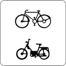 | M8 | Onderbord mag de verkeersborden B1 en B5 aanvullen wanneer die verkeersborden alleen betrekking hebben op fietsers en bestuurders van tweewielige bromfietsen. | |||
| Onderbord | vast | |
M9 | Onderbord mag de verkeersborden B1, B5 en B17 aanvullen om aan te duiden dat fietsers in de twee rijrichtingen rijden op de dwarslopende openbare weg die men gaat oprijden. | |||
| Onderbord | vast | 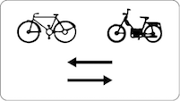 | M10 | Onderbord mag de verkeersborden B1, B5 en B17 aanvullen om aan te duiden dat fietsers en bestuurders van tweewielige bromfietsen in de twee rijrichtingen rijden op de dwarslopende openbare weg die men gaat oprijden. | |||
| Onderbord | vast | 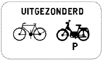 | M11 | Een onderbord van het model M.3. moet het verkeersbord C1 en F19 aanvullen wanneer het verbod niet geldt voor de fietsers en niet voor de bestuurders van speed pedelecs. | |||
| Onderbord | vast | 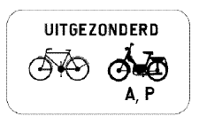 | M12 | Een onderbord van het model M.3. moet het verkeersbord C1 en F19 aanvullen wanneer het verbod niet geldt voor de fietsers en niet voor de bestuurders van speed pedelecs en van bromfietsen klasse A. | |||
| Onderbord | vast | 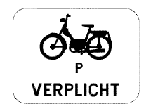 | M13 | Een onderbord van het model M.13. bedoeld in artikel 65.2. moet het verkeersbord D7 aanvullen wanneer het fietspad moet gevolgd worden door de bestuurders van speed pedelecs. | |||
| Onderbord | vast | 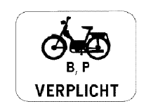 | M14 | Een onderbord van het model M.14. bedoeld in artikel 65.2. moet het verkeersbord D7 aanvullen wanneer het fietspad moet gevolgd worden door de bestuurders van speed pedelecs en bromfietsen klasse B. | |||
| Onderbord | vast | 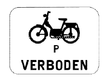 | M15 | Onderbord moet het verkeersbord D7 aanvullen wanneer het fietspad niet mag gevolgd worden door de bestuurders van speed pedelecs. | |||
| Onderbord | vast | 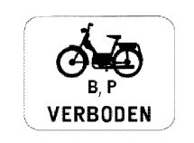 | M16 | Onderbord moet het verkeersbord D7 aanvullen wanneer het fietspad niet mag gevolgd worden door de bestuurders van speed pedelecs en van tweewielige bromfietsen klasse B. | |||
| Onderbord | vast | 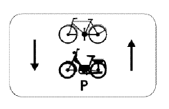 | M17 | Onderbord vult het verkeersbord C1 en F19 aan wanneer het verbod niet geldt voor de fietsers en niet voor de bestuurders van speed pedelecs. | |||
| Onderbord | vast | 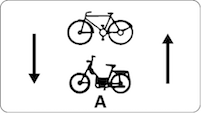 | M18 | Onderbord vult het verkeersbord C1 en F19 aan wanneer het verbod niet geldt voor de fietsers en niet voor de bestuurders van speed pedelecs en bromfiesten klasse A. | |||
| Onderbord | vast | 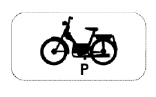 | M19 | Onderbord mag de verkeersborden B1 en B5 aanvullen wanneer die verkeersborden alleen betrekking hebben op bestuurders van speed pedelecs. | |||
| Onderbord | vast | 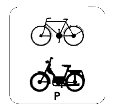 | M20 | Onderbord mag de verkeersborden B1 en B5 aanvullen wanneer die verkeersborden alleen betrekking hebben op fietsers en bestuurders van speed pedelecs. | |||
| Verbodsbord | vast | |
C1 | Verboden richting voor ieder bestuurder. | F19 | ||
| Verbodsbord | vast | |
C3 | Verboden toegang, in beide richtingen, voor ieder bestuurder. | |||
| Verbodsbord | vast | |
C5 | Verboden toegang voor bestuurders van motorvoertuigen met meer dan twee wielen en van motorfietsen met zijspan. Wanneer het verkeersbord is aangevuld met de vermelding "Uitgezonderd 2+" of "3+" zijn de rijbaan of de rijstrook aldus gesignaleerd, slechts toegankelijk voor voertuigen met ten minste 2 of 3 inzittenden, naargelang van de vermelding, evenals voor de voertuigen van de geregelde openbare diensten voor gemeenschappelijk vervoer. De andere voertuigen mogen de aldus gesignaleerde rijstroken slechts volgen:(1) om de op en afritten te gebruiken;(2) om van richting te veranderen of om een aanpalende eigendom te bereiken. | |||
| Verbodsbord | vast | |
C7 | Verboden toegang voor bestuurders van motorfietsen. | |||
| Verbodsbord | vast | |
C9 | Verboden richting voor bestuurders van bromfietsen. | |||
| Verbodsbord | vast | |
C11 | Verboden toegang voor bestuurders van rijwielen. | |||
| Verbodsbord | vast | |
C19 | Verboden toegang voor voetgangers. | |||
| Verbodsbord | vast | |
C22 | Verboden toegang voor bestuurders van autocars. | |||
| Verbodsbord | var | 55t | |
C21 | Verboden toegang voor bestuurders van voertuigen waarvan de massa in beladen toestand hoger is dan de aangeduide massa. | ||
| Verbodsbord | var | 55t | |
C21_55t | Verboden toegang voor bestuurders van voertuigen waarvan de massa in beladen toestand hoger is dan de aangeduide massa. | ||
| Verbodsbord | var | 35t | 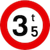 | C21_35t | Verboden toegang voor bestuurders van voertuigen waarvan de massa in beladen toestand hoger is dan de aangeduide massa. | ||
| Verbodsbord | vast | |
C23 | Verboden toegang voor bestuurders van voertuigen gebruikt voor het vervoer van zaken. Een opschrift op een onderbord beperkt het verbod tot de bestuurders van voertuigen waarvan de massa in beladen toestand hoger is dan de aangeduide massa. | |||
| Verbodsbord | vast | |
C13 | Verboden toegang voor bestuurders van gespannen. | |||
| Verbodsbord | var | 10m | |
C25 | Verboden toegang voor bestuurders van voertuigen of slepen waarvan de lengte, lading inbegrepen, groter is dan de aangeduide. | ||
| Verbodsbord | var | 2m50 | |
C27 | Verboden toegang voor bestuurders van voertuigen waarvan de breedte, lading inbegrepen, groter is dan de aangeduide. | ||
| Verbodsbord | var | 3m50 | |
C29 | Verboden toegang voor bestuurders van voertuigen waarvan de hoogte, lading inbegrepen, groter is dan de aangeduide. | ||
| Verbodsbord | vast | |
C31a | Verbod aan het volgend kruispunt af te slaan in de richting door de pijl aangegeven. | |||
| Verbodsbord | vast | |
C31b | Verbod aan het volgend kruispunt af te slaan in de richting door de pijl aangegeven. | |||
| Verbodsbord | vast | |
C33 | Vanaf het verkeersbord tot en met het volgend kruispunt, verbod te keren. | |||
| Verbodsbord | vast | |
C24b | Verboden toegang voor bestuurders van voertuigen die de gevaarlijke ontvlambare of ontplofbare stoffen, bepaald door de voor vervoer van gevaarlijke goederen bevoegde Ministers, vervoeren. | |||
| Verbodsbord | vast | |
C24a | Verboden toegang voor bestuurders van voertuigen die de gevaarlijke goederen, bepaald door de voor vervoer van gevaarlijke goederen bevoegde Ministers, vervoeren. | |||
| Verbodsbord | vast | |
C24c | Verboden toegang voor bestuurders van voertuigen die de gevaarlijke verontreinigende stoffen, bepaald door de voor vervoer van gevaarlijke goederen bevoegde Ministers, vervoeren. | |||
| Verbodsbord | vast | |
C35 | Vanaf het verkeersbord tot en met het volgend kruispunt, verbod een gespan of een voertuig met meer dan twee wielen, links in te halen. | C46|C37 | ||
| Verbodsbord | vast | |
C37 | Einde van het verbod opgelegd door het verkeersbord C35. | |||
| Verbodsbord | vast | |
C39 | Vanaf het verkeersbord tot en met het volgend kruispunt, verbod voor bestuurders van voertuigen of slepen gebruikt voor het vervoer van zaken, waarvan de maximale toegelaten massa meer dan 3.500 kg bedraagt, een gespan of een voertuig met meer dan twee wielen links in te halen. | C46|C41 | ||
| Verbodsbord | vast | |
C41 | Einde van het verbod opgelegd door het verkeersbord C39. | |||
| Verbodsbord | var | 50 | 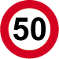 | C43 | Vanaf het verkeersbord tot en met het volgend kruispunt, verbod te rijden met een grotere snelheid dan deze die is aangeduid. | C45 | |
| Verbodsbord | var | 30 | 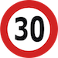 | C43-30 | Vanaf het verkeersbord tot en met het volgend kruispunt, verbod te rijden met een grotere snelheid dan deze die is aangeduid. | C45 | |
| Verbodsbord | var | 50 | |
C43-50 | Vanaf het verkeersbord tot en met het volgend kruispunt, verbod te rijden met een grotere snelheid dan deze die is aangeduid. | C45 | |
| Verbodsbord | var | 70 | 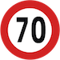 | C43-70 | Vanaf het verkeersbord tot en met het volgend kruispunt, verbod te rijden met een grotere snelheid dan deze die is aangeduid. | C45 | |
| Verbodsbord | var | 90 | 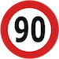 | C43-90 | Vanaf het verkeersbord tot en met het volgend kruispunt, verbod te rijden met een grotere snelheid dan deze die is aangeduid. | C45 | |
| Verbodsbord | var | 100 | 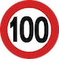 | C43-100 | Vanaf het verkeersbord tot en met het volgend kruispunt, verbod te rijden met een grotere snelheid dan deze die is aangeduid. | C45 | |
| Verbodsbord | var | 110 | 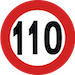 | C43-110 | Vanaf het verkeersbord tot en met het volgend kruispunt, verbod te rijden met een grotere snelheid dan deze die is aangeduid. | C45 | |
| Verbodsbord | var | 120 | 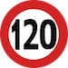 | C43-120 | Vanaf het verkeersbord tot en met het volgend kruispunt, verbod te rijden met een grotere snelheid dan deze die is aangeduid. | ||
| Verbodsbord | var | |
C45 | Einde van de snelheidsbeperking opgelegd door het verkeersbord C43. | |||
| Verbodsbord | var | 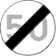 | C45_50 | Einde van de snelheidsbeperking opgelegd door het verkeersbord C43. | |||
| Verbodsbord | vast | |
C46 | Einde van alle plaatselijke verbodsbepalingen opgelegd aan de voertuigen in beweging. | |||
| Verbodsbord | var | Tol | |
C47 | Tolpost. Verbod voorbij te rijden zonder te stoppen. Het opschrift mag vervangen worden door het woord "Taks". | ||
| Verbodsbord | vast | |
C48 | Vanaf het verkeersbord tot het volgend kruispunt, verbod de cruise control of kruissnelheidsregelaar te gebruiken. | Een opschrift op een onderbord beperkt het verbod tot de bestuurders van voertuigen waarvan de maximale toegelaten massa hoger is dan de aangeduide massa. | ||
| Verbodsbord | vast | |
C49 | Einde van het verbod opgelegd door het verkeersbord C48. | |||
| Gebodsbord | vast | |
D1 | Verplichting de door de pijl aangeduide richting te volgen. | |||
| Gebodsbord | vast | 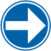 | D1 | Verplichting de door de pijl aangeduide richting te volgen. | |||
| Gebodsbord | vast | |
D1 | Verplichting de door de pijl aangeduide richting te volgen. | |||
| Gebodsbord | vast | D1 | Verplichting de door de pijl aangeduide richting te volgen. | ||||
| Gebodsbord | vast | D1 | Wanneer het verkeersbord dat een niet-gebogen pijl voorstelt, op een hindernis geplaatst is, betekent het dat langs de door de pijl aangeduide richting moet voorbijgereden worden. | ||||
| Gebodsbord | vast | D1 | Wanneer het verkeersbord dat een niet-gebogen pijl voorstelt, op een hindernis geplaatst is, betekent het dat langs de door de pijl aangeduide richting moet voorbijgereden worden. | ||||
| Gebodsbord | vast | D3 | Verplichting één van de door de pijlen aangeduide richtingen te volgen. De plaatsgesteldheid bepaalt de stand van de pijlen. | ||||
| Gebodsbord | vast | |
D4 | Verplichting voor voertuigen die gevaarlijke goederen vervoeren om de door de pijl aangeduide richting te volgen. De plaatsgesteldheid bepaalt de stand van de pijl.Een onderbord met vermelding van de letter B, C, D of E duidt erop dat de verplichting geldt voor voertuigen die gevaarlijke goederen vervoeren en waarvoor de toegang tot wegtunnels van respectievelijk categorie B, C, D of E verboden is, zoals deze categorieën voorzien zijn in artikel 1.9.5.2 van bijlage A van het Europees verdrag betreffende het internationaal vervoer van gevaarlijke goederen over de weg (ADR.), ondertekend te Genève op 30 september 1957. | |||
| Gebodsbord | vast | |
D5 | Verplicht rondgaand verkeer. | B1 | ||
| Gebodsbord | vast | |
D7 | Verplicht fietspad. | |||
| Gebodsbord | vast | |
D9 | Deel van de openbare weg voorbehouden voor het verkeer van voetgangers, van fietsen en van tweewielige bromfietsen klasse A. | |||
| Gebodsbord | vast | |
D10 | Deel van de openbare weg voorbehouden voor het verkeer van voetgangers en fietsers. | |||
| Gebodsbord | vast | |
D11 | Verplichte weg voor voetgangers. | |||
| Gebodsbord | vast | |
D13 | Verplichte weg voor ruiters. | |||
| StilstaanParkeerBord | vast | |
E1 | Verboden te parkeren. | |||
| StilstaanParkeerBord | vast | |
E3 | Stilstaan en parkeren verboden. | |||
| StilstaanParkeerBord | vast | |
E5 | Parkeerverbod langs deze kant van de rijbaan van de 1e tot de 15e van de maand. | |||
| StilstaanParkeerBord | vast | |
E7 | Parkeerverbod langs deze kant van de rijbaan van de 16e tot het einde van de maand. | |||
| StilstaanParkeerBord | vast | |
E9a | Parkeren toegestaan. | |||
| StilstaanParkeerBord | vast | E9a-schijf | De parkeerschijf mag op het verkeersbord E9a afgebeeld worden. | ||||
| StilstaanParkeerBord | vast | E9a-rolstoel | Het symbool voor een persoon met een handicap op het bord E9a, duidt aan dat het parkeren voorbehouden is voor voertuigen die gebruikt worden door personen met een handicap. | ||||
| StilstaanParkeerBord | vast | |
E9b | Parkeren enkel toegestaan voor:
|
|||
| StilstaanParkeerBord | vast | |
E9c | Parkeren enkel toegestaan voor:
|
|||
| StilstaanParkeerBord | vast | |
E9d | Parkeren enkel toegestaan voor:
|
|||
| StilstaanParkeerBord | vast | |
E9i | Parkeren enkel toegestaan voor:
|
|||
| StilstaanParkeerBord | vast | |
E9e | Verplicht parkeren op de berm of op het trottoir. | |||
| StilstaanParkeerBord | vast | |
E9f | Verplicht parkeren deels op de berm of op het trottoir. | |||
| StilstaanParkeerBord | vast | |
E9g | Verplicht parkeren op de rijbaan. | |||
| StilstaanParkeerBord | vast | |
E9h | Parkeren uitsluitend voor kampeerauto's. | |||
| StilstaanParkeerBord | vast | |
E9i | Parkeren uitsluitend voor motorfietsen. | |||
| AanwijsBord | vast | |
F1b | Begin van een bebouwde kom. Geen gemeentenaam. | |||
| AanwijsBord | vast | |
F1b_V | Begin van een bebouwde kom. Vertikaal geörienteerd bord, geen gemeentenaam. | |||
| AanwijsBord | vast | |
F1b_H | Begin van een bebouwde kom. Horizontaal geörienteerd bord, geen gemeentenaam. | |||
| AanwijsBord | var | Eupen | |
F1a_V | Begin van een bebouwde kom. Vertikaal geörienteerd bord, met gemeentenaam. | ||
| AanwijsBord | var | Villers-la-Ville | |
F1a | Begin van een bebouwde kom. Horizontaal geörienteerd bord, met gemeentenaam. | ||
| AanwijsBord | var | Villers-la-Ville | |
F1a_H | Begin van een bebouwde kom. Horizontaal geörienteerd bord, met gemeentenaam. | ||
| AanwijsBord | vast | |
F3b_V | Einde van een bebouwde kom. | |||
| AanwijsBord | vast | |
F3b | Einde van een bebouwde kom. | |||
| AanwijsBord | vast | |
F3b_H | Einde van een bebouwde kom. | |||
| AanwijsBord | var | Eupen | |
F3a_V | Einde van een bebouwde kom. | ||
| AanwijsBord | var | Villers-la-Ville | |
F3a | Einde van een bebouwde kom. | ||
| AanwijsBord | var | Villers-la-Ville | |
F3a | Einde van een bebouwde kom. | ||
| AanwijsBord | vast | |
F4a | Begin Zone 30. | Voor de signalisatie van de schoolomgevingen aangevuld met het bord A23. Dit mag ook met een signalisatie met veranderlijke informatie. | A23 | |
| AanwijsBord | vast | |
F4b | Einde Zone 30. | |||
| AanwijsBord | vast | F5 | Begin autosnelweg. | ||||
| AanwijsBord | vast | |
F7 | Einde autosnelweg. | |||
| AanwijsBord | vast | |
F9 | Begin autoweg. | |||
| AanwijsBord | vast | |
F11 | Einde autoweg. | |||
| AanwijsBord | vast | |
F12a | Begin van een woonerf of erf. | |||
| AanwijsBord | vast | |
F12b | Einde van een woonerf of erf. | |||
| AanwijsBord | vast | |
F13 | Verkeersbord dat pijlen op de rijbaan aankondigt en de keuze van een rijstrook voorschrijft. | |||
| AanwijsBord | vast | 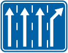 | F13 | Verkeersbord dat pijlen op de rijbaan aankondigt en de keuze van een rijstrook voorschrijft. | |||
| AanwijsBord | vast | |
F14 | Opstelvak voor fietsers en bestuurders van tweewielige bromfietsen. | Wanneer voorsorteringsstroken voorbehouden voor fietsers en bestuurders van tweewielige bromfietsen werden afgebakend. | F13 | |
| AanwijsBord | vast | |
F15 | Verkeersbord dat de keuze van een richting voorschrijft. - neerwaarts of opwaarts gerichte pijlen hebben betrekking op doorgaande richtingen; - schuin opwaarts of neerwaarts gerichte pijlen hebben betrekking op afslaande richtingen; - het aantal pijlen vertegenwoordigt het aantal rijstroken. | Aantal pijlen is afhankelijk van de situatie | ||
| AanwijsBord | vast | |
F17 | Aanduiding van de rijstroken van een rijbaan met een strook voorbehouden voor autobussen. | |||
| AanwijsBord | vast | 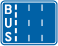 | F17l | Aanduiding van de rijstroken van een rijbaan met een strook voorbehouden voor autobussen. | |||
| AanwijsBord | vast | 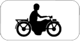 |
F17 | Aanduiding van de rijstroken van een rijbaan met een strook voorbehouden voor autobussen. Motorfietsen mogen op de busstrook rijden. | |||
| AanwijsBord | vast | |
F18 | Aanwijzing van een bijzondere overrijdbare bedding, voorbehouden aan het verkeer van voertuigen van geregelde diensten voor gemeenschappelijk vervoer. | |||
| AanwijsBord | vast | 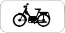 |
F18 | Aanwijzing van een bijzondere overrijdbare bedding, voorbehouden aan het verkeer van voertuigen van geregelde diensten voor gemeenschappelijk vervoer. Bestuurders van bromfietsen mogen er ook rijden. | |||
| AanwijsBord | vast | |
F18 | Aanwijzing van een bijzondere overrijdbare bedding, voorbehouden aan het verkeer van voertuigen van geregelde diensten voor gemeenschappelijk vervoer. Bestuurders van motorfietsen mogen er rijden. | |||
| AanwijsBord | vast | |
F18 | Aanwijzing van een bijzondere overrijdbare bedding, voorbehouden aan het verkeer van voertuigen van geregelde diensten voor gemeenschappelijk vervoer. Bestuurders van fietsen mogen er rijden. | |||
| AanwijsBord | vast | 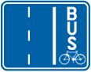 | F17 | Aanwijzing van een bijzondere overrijdbare bedding, voorbehouden aan het verkeer van voertuigen van geregelde diensten voor gemeenschappelijk vervoer. | |||
| AanwijsBord | var | |
F23b | Nummer van een autosnelweg. | |||
| AanwijsBord | var | |
F23c | Nummer van een internationale weg. | |||
| AanwijsBord | var | |
F23a | Nummer van een gewone weg. | |||
| AanwijsBord | var | |
F23d | Nummer van een ring. | |||
| AanwijsBord | var | |
F19 | Openbare weg met eenrichtingsverkeer. | C1 | ||
| AanwijsBord | var | |
F33a | Bewegwijzeringsbord op afstand: luchthaven, universitair centrum, kliniek en ziekenhuis, beurs- of tentoonstellingshal, haven, wijk, ring, bedrijf, industriepark en commercieel centrum. De afstand in km kan op de wegwijzer aangeduid zijn. | Het verkeersbord mag aangevuld worden met het symbool van het verkeersbord F53 en met de volgende symbolen : Luchthaven, Beurs, Haven, Car-Ferry, Industriepark. | ||
| AanwijsBord | var | |
F33c | Bewegwijzeringsbord op afstand: sportcentrum, plaats met een toeristisch of ontspannend karakter, recreatie- of pretpark, cultureel park, monument, merkwaardig landschap. | Het verkeersbord mag aangevuld worden met de symbolen van het type S. 30. tot S. 36. | ||
| AanwijsBord | var | |
F34b1 | Wegwijzer: aanbevolen reisweg voor bepaalde categorieën van weggebruikers. | Het verkeersbord wordt aangevuld met het (de) symbool(olen) van de verkeersborden C11, C15 en C19. | ||
| AanwijsBord | var | |
F34b2 | Wegwijzer: aanbevolen reisweg voor bepaalde categorieën van weggebruikers. | Het verkeersbord wordt aangevuld met het (de) symbool(olen) van de verkeersborden C11, C15 en C19. Op het verkeersbord F34b.2, zijn de vermelding van de bestemming en de pijl facultatief. | ||
| AanwijsBord | vast | |
F21 | Rechts of links voorbijrijden toegelaten. | |||
| AanwijsBord | vast | |
F25 | Voorwegwijzer | |||
| AanwijsBord | vast | |
F27 | Voorwegwijzer. | |||
| AanwijsBord | var | |
F29 | Wegwijzer. De afstand in km kan op de wegwijzer aangeduid zijn. | |||
| AanwijsBord | var | |
F31 | Wegwijzer. Reisweg over een autosnelweg. De afstand in km kan op de wegwijzer aangeduid zijn. | |||
| AanwijsBord | vast | |
F49 | Oversteekplaats voor voetgangers. | |||
| AanwijsBord | vast | |
F50 | Oversteekplaats voor fietsers en bestuurders van tweewielige bromfietsen. | |||
| AanwijsBord | vast | |
F50bis | Verkeersbord dat de bestuurders die van richting veranderen wijst op fietsers en bestuurders van tweewielige bromfietsen die dezelfde openbare weg volgen. | De reproduktie van het verkeersbord A25 kan vervangen worden door de reproduktie van het verkeersbord A21 om op een oversteekplaats voor voetgangers te wijzen. Eventueel kunnen de reprodukties van de verkeersborden A21 en A25 samen aangebracht worden. | ||
| AanwijsBord | vast | |
F45 | Doodlopende weg. | |||
| AanwijsBord | vast | |
F45b | Doodlopende weg, uitgezonderd voor voetgangers en fietsers. | |||
| AanwijsBord | vast | |
F47 | Einde van de werken. | |||
| AanwijsBord | var | |
F79 | Voorwegwijzer die de vermindering van het aantal rijstroken aankondigt. | |||
| AanwijsBord | var | |
F81 | Voorwegwijzer die een uitwijking aankondigt. | |||
| AanwijsBord | var | |
F83 | Voorwegwijzer die een doorsteek van de middenberm aankondigt. | |||
| AanwijsBord | vast | |
F85 | Verkeer toegelaten in beide richtingen op een deel van de rijbaan met eenrichtingsverkeer. | |||
| AanwijsBord | var | |
F89 | Voorwegwijzer die een gevaar of een verkeersregel aankondigt die slechts van toepassing is op een of meerdere rijstroken van een rijbaan die meerdere rijstroken in dezelfde richting omvat. | Dit verkeersbord mag niet boven de rijbaan geplaatst worden. De aankondiging van een gevaar of een verkeersregel kan boven de rijbaan aangebracht worden, boven de rijstrook waarvoor ze bestemd is, zonder dat het verkeersbord F89 geplaatst wordt. | ||
| AanwijsBord | var | |
F91 | Verkeersbord dat een gevaar aanduidt of een verkeersregel voorschrijft die slechts van toepassing is op één of meerdere rijstroken van een rijbaan die meerdere rijstroken in dezelfde richting omvat. | Dit verkeersbord mag niet boven de rijbaan geplaatst worden. De aankondiging van een gevaar of een verkeersregel kan boven de rijbaan aangebracht worden, boven de rijstrook waarvoor ze bestemd is, zonder dat het verkeersbord F91 geplaatst wordt. | ||
| AanwijsBord | vast | |
F87 | Verhoogde inrichting. | A14 | ||
| AanwijsBord | vast | |
F97 | Verkeersbord dat een versmalling aanduidt die de omvang van een rijstrook heeft. Linkse rijstrook vervalt. | Het symbool mag aangepast worden om de plaatsgesteldheid weer te geven. | ||
| AanwijsBord | vast | 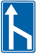 | F97r | Verkeersbord dat een versmalling aanduidt die de omvang van een rijstrook heeft. Rechtse rijstrook vervalt. | Het symbool mag aangepast worden om de plaatsgesteldheid weer te geven. | ||
| AanwijsBord | vast | |
F99a | Weg voorbehouden voor het verkeer van voetgangers, fietsers en ruiters. Het verkeersbord mag aangepast worden volgens de categorie(ën) van weggebruiker(s) die tot deze weg is (zijn) toegelaten. | |||
| AanwijsBord | vast | |
F101a | Einde van de weg voorbehouden voor het verkeer van voetgangers, fietsers en ruiters. | |||
| AanwijsBord | vast | |
F103 | Begin van een voetgangerszone. Dit verkeersbord wordt rechts geplaatst aan elke toegang tot een voetgangerszone; het mag links herhaald worden. | |||
| AanwijsBord | vast | |
F105 | Einde van een voetgangerszone. Dit verkeersbord wordt rechts geplaatst aan elke uitgang tot een voetgangerszone; het mag links herhaald worden. | |||
| AanwijsBord | vast | |
F107 | Vanaf dit verkeersbord tot aan het verkeersbord F109 is het voor de bestuurders van voertuigen en slepen gebruikt voor het vervoer van zaken met een maximale toegelaten massa van meer dan 3,5 ton toegelaten om een gespan, een tweewielig motorvoertuig of een voertuig met meer dan twee wielen links in te halen.. | |||
| AanwijsBord | vast | |
F109 | Einde van de toelating voor de bestuurders van voertuigen en slepen gebruikt voor het vervoer van zaken met een maximale toegelaten massa van meer dan 3,5 ton om een gespan, een tweewielig motorvoertuig of een voertuig met meer dan twee wielen links in te halen. | |||
| AanwijsBord | vast | |
F111 | Begin van een fietsstraat. De vermelding "Fietsstraat" op het verkeersbord is facultatief. | |||
| AanwijsBord | vast | |
F113 | Einde van een fietsstraat. De vermelding "Fietsstraat" op het verkeersbord is facultatief. | |||
| AanwijsBord | vast | |
F117 | Begin van een lage emissiezone. | |||
| AanwijsBord | vast | |
F118 | Einde van een lage emissiezone. | |||
| Onderbord | var | 150m | GIa | Onderbord met een afstand die aangeeft over welke afstand het bovenbord zal gelden. | Opschrift (de afstand) kan aangepast worden naargelang de situatie. | C43|A#|B1|B13 | |
| Onderbord | var | 150m | GIa_150m | Onderbord met een afstand die aangeeft over welke afstand het bovenbord zal gelden. | Opschrift (de afstand) kan aangepast worden naargelang de situatie. | C43|A#|B1|B13 | |
| Onderbord | var | 200m | GIa_200m | Onderbord met een afstand die aangeeft over welke afstand het bovenbord zal gelden. | Opschrift (de afstand) kan aangepast worden naargelang de situatie. | C43|A#|B1|B13 | |
| Onderbord | var | 150m | GIb | In verkeerscode gelabeld als "STOP150M". Onderbord met een afstand die aangeeft over welke afstand de bestuurder moet stoppen. | Opschrift (de afstand) kan aangepast worden naargelang de situatie. | B1 | |
| Onderbord | var | 10km | GII | In verkeerscode gelabeld als "10KM". Onderbord met een afstand die aangeeft over welke lengte van de openbare weg het bovenbord blijft gelden. | Opschrift (de afstand) kan aangepast worden naargelang de situatie. | A# | |
| Onderbord | var | |
GIII | In verkeerscode gelabeld als "BijNatWegdek". | Opschrift kan aangepast worden naargelang de situatie. | ||
| Onderbord | var | |
GIII_BijNatWegdek | In verkeerscode gelabeld als "BijNatWegdek". | Opschrift kan aangepast worden naargelang de situatie. | ||
| Onderbord | var | Ijzel | GIII_ijzel | bij Ijzel | Opschrift kan aangepast worden naargelang de situatie. | ||
| Onderbord | var | Uitrit Vrachtwagen | 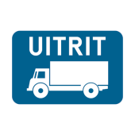 | GIII_UitritVrachtwagen | waarschuwing voor uitrit van vrachtwagen | Opschrift kan aangepast worden naargelang de situatie. | |
| Onderbord | var | Uitgezonderd bus | GIV | In verkeerscode gelabeld als "CIRCLOC" en mijn opschrift "UITGEZONDERD BUS". Beperking van een verbod of van een gebod voor zekere categorieën van voertuigen. | Opschrift kan wijzigen. | C1|C3|C5|C31# | |
| Onderbord | var | Uitgezonderd bus | |
GIV_uitgezonderdbus | Uitgezonderd bus. Beperking van een verbod of van een gebod voor zekere categorieën van voertuigen. | Opschrift kan wijzigen. | C1|C3|C5|C31# |
| Onderbord | var | Uitgezonderd plaatselijk verkeer | GIV_uitgezonderdplaatselijkverkeer | Beperking van een verbod of van een gebod voor plaatselijk verkeer. | Opschrift kan wijzigen. | C1|C3|C5|C31# | |
| Onderbord | var | van7tot19u | |
GVa | In verkeerscode gelabeld als "7A19H". Aanvulling van de verkeersborden betreffende het stilstaan en parkeren. Specifiek over een tijdsvenster van/tot. | Opschrift kan wijzigen. | E# |
| Onderbord | var | maa_vrij | |
GVb | In verkeerscode gelabeld als "maavrij". Aanvulling van de verkeersborden betreffende het stilstaan en parkeren. | Opschrift kan wijzigen. | E# |
| Onderbord | vast | GVI | In verkeerscode gelabeld als "HERHALING". Aanvulling bij verbodsborden. | Opschrift kan wijzigen. | C43 | ||
| Onderbord | var | +2t | GVIIa | In verkeerscode als "3,5t" en ook als "2t". Aanvulling van de verkeersborden betreffende het stilstaan en parkeren. | E# | ||
| Onderbord | var | +2t | |
GVIIa_2T | Aanvulling van de verkeersborden betreffende het stilstaan en parkeren. | E# | |
| Onderbord | var | +3,5t | GVIIa_35t | In verkeerscode als "3,5t" en ook als "2t". Aanvulling van de verkeersborden betreffende het stilstaan en parkeren. | E# | ||
| Onderbord | vast | |
GVIIb | In verkeerscode als "DISK". Geeft een parkeerschijf aan. Aanvulling van de verkeersborden betreffende het stilstaan en parkeren. | E# | ||
| Onderbord | var | 30min | |
GVIIc | In verkeerscode als "30MIN". Aanvulling van de verkeersborden betreffende het stilstaan en parkeren. | E# | |
| Onderbord | var | taxis | GVIId | Parkeren is voorbehouden voor taxi's. In verkeerscode als "taxi" met opschrift "taxi's". Aanvulling van de verkeersborden betreffende het stilstaan en parkeren. | E# | ||
| Onderbord | var | gehandicapten | GVIId_rolstoel | Parkeren is voorbehouden voor gehandicapten. Aanvulling van de verkeersborden betreffende het stilstaan en parkeren. | E# | ||
| Onderbord | var | Elektrische voertuigen | GVIId_elec | Parkeren is voorbehouden voor elektrische voertuigen. Aanvulling van de verkeersborden betreffende het stilstaan en parkeren. | E# | ||
| Onderbord | var | GVIII | In verkeerscode gelabeld als "TYPE8". Geeft aan welke openbare weg de voorrangsweg is. | Visualisatie zal de concrete wegsituatie weergeven. | B15 | ||
| Onderbord | vast | GIXa | In verkeerscode gelabeld als "TYPE9". Geeft een rijstrookversmalling aan en visualiseert welke rijstrook wegvalt. | ||||
| Onderbord | vast | |
GIXa_r | Geeft een rijstrookversmalling aan, rechtse rijstrook eindigt. | |||
| Onderbord | vast | GIXa_l | Geeft een rijstrookversmalling aan, linkse rijstrook eindigt. | ||||
| Onderbord | vast | |
GXa | Opwaartse pijl bij verkeersborden betreffende het stilstaan en parkeren. Begin reglmenetering. | In verkeerscode gelabeld als "FLE-A". | E# | |
| Onderbord | vast | |
GXb | Neerwaartse pijl bij verkeersborden betreffende het stilstaan en parkeren.Einde reglementering. | In verkeerscode gelabeld als "FLE-B". | E# | |
| Onderbord | var | 20m | |
GXc | Opwaartse pijl met opgave van de afstand waarover de parkeerrichtlijn van kracht blijft. | In verkeerscode gelabeld als "FLE-C". Opschrift met afstand kan wijzigen. | E# |
| Onderbord | vast | |
GXd | In verkeerscode gelabeld als "FLE-D". Dubbele pijl bij verkeersborden betreffende het stilstaan en parkeren. | E# | ||
| ZoneBord | vast | 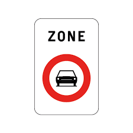 | ZC5 | Begin Zone met verbod voor bestuurders van motorvoertuigen met meer dan twee wielen en van motorfietsen met zijspan. | |||
| ZoneBord | vast | 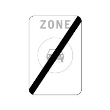 | ZC5b | Einde Zone met verbod voor met verbod voor bestuurders van motorvoertuigen met meer dan twee wielen en van motorfietsen met zijspan. | |||
| ZoneBord | var | 55t | 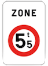 | ZC21 | Begin Zone met verbod voor voertuigen met een hogere MTM dan aangegeven. | ||
| ZoneBord | var | 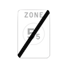 | ZC21b | Einde Zone met verbod voor voertuigen met een hogere MTM dan aangegeven. | |||
| ZoneBord | var | 55t | 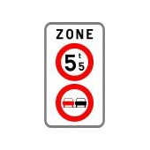 | ZC21C35V | Begin Zone met verbod voor voertuigen met een hogere MTM dan aangegeven EN met verbod in te halen. | Dit bord heeft een verticale opstelling van de verbodsborden. | |
| ZoneBord | var | 55t | 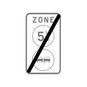 | ZC21C35Vb | Einde Zone met verbod voor voertuigen met een hogere MTM dan aangegeven EN met verbod in te halen. | Dit bord heeft een verticale opstelling van de verbodsborden. | |
| ZoneBord | var | 55t | 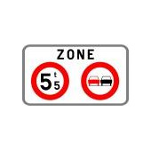 | ZC21C35H | Begin Zone met verbod voor voertuigen met een hogere MTM dan aangegeven EN met verbod in te halen. | Dit bord heeft een horizontale opstelling van de verbodsborden. | |
| ZoneBord | var | 55t | 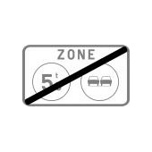 | ZC21C35Hb | Einde Zone met verbod voor voertuigen met een hogere MTM dan aangegeven EN met verbod in te halen. | Dit bord heeft een horizontale opstelling van de verbodsborden. | |
| ZoneBord | var | 50 | 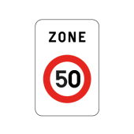 | ZC43_50 | Begin Zone met verbod te rijden met een grotere snelheid dan deze die is aangeduid. | Signalisatie met zonale geligheid kan voor (1) verbodsborden (maar niet C1,C31,C33,C47, C43); (2) C43 met de snelheidsbeperking 50 of 70 km wanneer buiten de bebouwde kom;(3) borden mbt stilstaan en parkeren (maar niet E5,E7,E11) | |
| ZoneBord | var | 50 | 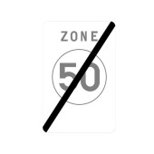 | ZC43_50b | Einde Zone met verbod te rijden met een grotere snelheid dan deze die is aangeduid. | ||
| ZoneBord | vast | 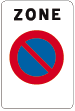 | ZE1 | Begin Zone met verbod te parkeren. | |||
| ZoneBord | vast | |
ZE1b | Einde Zone met verbod te parkeren. | |||
| ZoneBord | vast | |
ZE9AGS | Begin Zone met beperkte parkeertijd. | Artikel 27.1 (Zone met beperkte parkeertijd(BLAUWE ZONE) en artikel 65.5 (Zonale geldigheid) | ||
| ZoneBord | vast | |
ZE9AGSE | Einde Zone met beperkte parkeertijd. | Artikel 27.1 (Zone met beperkte parkeertijd(BLAUWE ZONE) en artikel 65.5 (Zonale geldigheid) | ||
| Wegmarkering | vast | |
mark22 | Een doorlopende streep betekent dat het iedere bestuurder verboden is deze te overschrijden. | C35 | ||
| Wegmarkering | vast | |
mark21 | Een onderbroken streep betekent dat het iedere bestuurder verboden is deze te overschrijden, behalve om in te halen, om links af te slaan, om te keren of om van rijstrook te veranderen. | |||
| Wegmarkering | vast | |
mark03 | Wanneer de trekken van de onderbroken streep korter zijn en dichter bij elkaar getrokken, kondigen zij het naderen van een doorlopende streep aan. | |||
| Wegmarkering | vast | |
mark25 | Wanneer een doorlopende en een onderbroken streep naast elkaar getrokken zijn, moet de bestuurder alleen rekening houden met de streep die zich aan zijn kant bevindt. De bestuurders die deze strepen overschreden hebben om in te halen mogen ze evenwel opnieuw overschrijden om hun normale plaats op de rijbaan te hernemen. | |||
| Wegmarkering | vast | |
mark06 | De rijstrook afgebakend met brede onderbroken strepen en de markering van het woord « BUS » is voorbehouden aan voertuigen van geregelde diensten voor gemeenschappelijk vervoer, taxi’s en voertuigen voor schoolvervoer bedoeld in artikel 39bis. | F17 | ||
| Wegmarkering | vast | |
mark07 | Een of meerdere brede witte doorlopende strepen of de markering, bedoeld in artikel 77.8, bakenen de bijzondere overrijdbare bedding af die voorbehouden is aan voertuigen van geregelde diensten voor gemeenschappelijk vervoer. | F18 | ||
| Wegmarkering | vast | |
mark08 | Het deel van de openbare weg dat afgebakend is door twee evenwijdige witte onderbroken strepen en dat niet breed genoeg is voor het autoverkeer, is een fietspad. | |||
| Wegmarkering | vast | |
mark23 | Een witte, doorlopende streep mag op de werkelijke rand van de rijbaan, op een trottoirband of op de boordsteen van een verhoogde berm aangebracht worden om deze beter zichtbaar te maken. | |||
| Wegmarkering | vast | |
mark10 | Een gele onderbroken streep mag op de werkelijke rand van de rijbaan, op een trottoirband of op de boordsteen van een verhoogde berm aangebracht worden. Langs deze gele streep is het parkeren op de rijbaan verboden. | |||
| Wegmarkering | vast | |
mark12 | Een brede witte doorlopende streep mag op de rijbaan aangebracht worden om de denkbeeldige rand van die rijbaan aan te duiden. Het aan de andere kant van deze streep gelegen deel van de openbare weg is voorbehouden voor het stilstaan en parkeren, behalve op autosnelwegen en autowegen.Het begin en het einde van deze parkeerzone mogen aangeduid worden door een witte doorlopende dwarsstreep. | |||
| Wegmarkering | vast | |
mark14 | Een stopstreep gevormd door een witte doorlopende streep, haaks op de rand van de rijbaan aangebracht duidt de plaats aan waar de bestuurders moeten stoppen ingevolge een verkeersbord B5 of een verkeerslicht. | B5 | ||
| Wegmarkering | vast | |
mark15 | Een dwarsstreep gevormd door witte driehoeken, duidt de plaats aan waar de bestuurders, zo nodig, moeten stoppen om voorrang te verlenen ingevolge een verkeersbord B1. | B1 | ||
| Wegmarkering | vast | |
mark16 | Zebrapad. De oversteekplaatsen voor voetgangers worden afgebakend door witte banden, evenwijdig met de as van de rijbaan. | |||
| Wegmarkering | vast | |
mark17 | De oversteekplaatsen die de fietsers en bestuurders van tweewielige bromfietsen moeten volgen om de rijbaan over te steken, worden afgebakend door twee onderbroken strepen gevormd door witte vierkanten of parallellogrammen. | |||
| Wegmarkering | vast | |
mark18 | Witte voorsorteringspijlen mogen bij het naderen van een kruispunt aangebracht worden. Deze pijlen duiden de rijstrook aan die de bestuurders moeten volgen om in de door de pijlen aangewezen richting te rijden. Op het kruispunt moeten de bestuurders bovendien de of één van de richtingen volgen die aangewezen zijn op de rijstrook waarin zij zich bevinden. | |||
| Wegmarkering | vast | |
mark19 | De onderbroken streep die het naderen van een doorlopende streep aankondigt mag aangevuld worden met witte rijstrookverminderingspijlen. Deze pijlen kondigen een vermindering van het aantal rijstroken aan die in de gevolgde richting mogen gebruikt worden. | F97 | ||
| Wegmarkering | vast | |
mark20 | Witte opschriften op de rijbaan mogen de door verkeersborden gegeven aanwijzingen herhalen. De verschillende richtingen mogen op de rijstroken aangeduid worden. Aan de autobus-, trolleybus- en tramhalten mag de zone waar het parkeren verboden is overeenkomstig artikel 25.1.2° aangeduid worden door witte opschriften. | |||
| Wegmarkering | vast | |
mark09 | Verkeersgeleiders en verdrijvingsvlakken mogen op de grond worden aangebracht door witte evenwijdige schuine strepen. De bestuurders mogen niet rijden, stilstaan of parkeren op deze markeringen. | |||
| Wegmarkering | vast | |
mark11 | In een parkeerzone mogen witte markeringen de plaatsen afbakenen waar de voertuigen moeten staan. | |||
| Wegmarkering | vast | |
mark13 | Markeringen die een opstelvak aanduiden voor fietsers en bestuurders van tweewielige bromfietsen. De zone, aansluitend op een fietspad, afgebakend door twee stopstrepen en waarin het symbool van een fiets in het wit is gereproduceerd duidt de plaats aan waar de fietsers en bestuurders van tweewielige bromfietsen zich enkel tijdens de rode fase van de verkeerslichten mogen opstellen. De andere bestuurders moeten tijdens de rode fase van de verkeerslichten stoppen voor de eerste stopstreep. | |||
| Wegmarkering | vast | |
mark30 | De dambordmarkering die bestaat uit witte vierkanten bakent de plaats af voorbehouden aan voertuigen van geregelde diensten voor gemeenschappelijk vervoer op een bijzondere overrijdbare bedding of de plaats die eigen beddingen en bijzondere overrijdbare beddingen met elkaar verbinden. Stilstaan en parkeren op deze markering is verboden. | |||
| Wegmarkering | vast | |
mark31 | Een doorlopende streep die plaatselijk onderbroken is, betekent dat het iedere bestuurder verboden is deze te overschrijden, behalve om links af te slaan. | |||
| Wegmarkering | vast | |
mark32 | Spitsstrook | Artikel 22 decies | ||
| Verkeerslicht | vast | |
Driekleurig systeem | Driekleurige verkeerslichten. Te vervolledigen. |